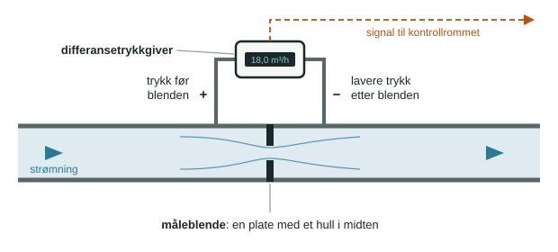

Mengdemåling
Hvor mye råstoff går inn i reaktoren? Hvor mye produkt sendes til kunden? For å svare må du måle hvor mye som strømmer gjennom rørene. Her lærer du hvordan de vanligste mengdemålerne virker, hva de passer til, og hva som kan få dem til å vise feil.
Hvorfor måler vi mengde?
- Riktig blanding. I en reaksjon må stoffene tilsettes i riktig forhold. Da må du vite hvor mye som strømmer inn av hvert stoff.
- Regnskap og salg. Bedriften må vite hvor mye råstoff den bruker, og hvor mye produkt den selger.
- Massebalanse. Det som går inn i et anlegg, må komme ut igjen. Mengdemålingene viser om noe forsvinner, for eksempel i en lekkasje.
- Utslipp. Mengden avløpsvann og avgass må måles for å vise at utslippskravene holdes.
Mengde kalles også strømning. Den kan oppgis som volumstrøm, for eksempel i m³/h, eller som massestrøm, for eksempel i kg/h. Forskjellen og hvordan du regner mellom dem, lærer du på siden Strømning i rør i Fysiske prinsipper.
Rotameteret: den lokale måleren
Et rotameter er et loddrett glassrør som er smalest nederst og bredest øverst. Inne i røret er det en liten flottør. Væsken eller gassen strømmer inn nedenfra og løfter flottøren. Jo større strømningen er, jo høyere opp går flottøren før den blir stående og sveve. Du leser av mengden på skalaen ved flottøren.
Rotametre er billige og trenger ikke strøm. De brukes mest på små rør, for eksempel til gass, kjølevann eller dosering av kjemikalier. Røret må stå helt loddrett for at målingen skal bli riktig.
Differansetrykk over en måleblende
En måleblende er en tynn plate med et hull i midten som settes inn mellom to flenser i røret. En flens er en flat ring på enden av et rør, som skrus sammen med flensen på neste rør. Væsken må presses gjennom hullet. Da blir trykket lavere etter blenden enn før. Jo mer som strømmer, jo større blir trykkforskjellen. En differansetrykkgiver måler forskjellen og regner ut mengden.

Trykkforskjellen øker med kvadratet av strømningen. Dobler du strømningen, blir trykkforskjellen fire ganger så stor. Halverer du strømningen, blir den bare en firedel. Det betyr at en måleblende er unøyaktig når det strømmer lite, fordi trykkforskjellen da blir svært liten.
Oppgave: Ved 20 m³/h er trykkforskjellen over en måleblende 0,40 bar. Hva blir trykkforskjellen når strømningen er 10 m³/h?
Løsning:
- Strømningen blir halvert: \( \dfrac{10 \text{ m}^3\text{/h}}{20 \text{ m}^3\text{/h}} = \dfrac{1}{2} \)
- Trykkforskjellen endrer seg med kvadratet av dette: \( \left(\dfrac{1}{2}\right)^2 = \dfrac{1}{4} \)
- \( 0{,}40 \text{ bar} \cdot \dfrac{1}{4} = 0{,}10 \text{ bar} \)
Svar: 0,10 bar. Halv strømning gir bare en firedel av trykkforskjellen.
Måleblender er enkle og billige, og de virker for væske, gass og damp. Ulempen er at de gir et varig trykktap i røret, og at de er unøyaktige ved liten strømning.
Magnetisk mengdemåler
En magnetisk mengdemåler er et rørstykke med en magnet rundt. Når en væske som leder strøm, strømmer gjennom magnetfeltet, lager den en liten elektrisk spenning. To små elektroder i røret måler spenningen. Jo fortere væsken strømmer, jo høyere blir spenningen.
Måleren har ingen deler som stikker inn i røret, så den gir ikke trykktap og tetter seg ikke. Den passer godt for vann, avløpsvann, syrer og slam. Men væsken må lede strøm. Olje, og rent, avionisert vann (vann der nesten alle oppløste salter er fjernet), leder for dårlig og kan ikke måles slik.
Coriolismåler
I en coriolismåler strømmer væsken gjennom ett eller to rør som vibrerer. Når væsken strømmer, vrir rørene seg litt. Måleren måler hvor mye de vrir seg. Ut fra det finner den massestrømmen direkte, i kg/h. Den kan også måle tettheten til væsken.
Coriolismålere er svært nøyaktige og brukes når det er viktig å vite nøyaktig hvor mange kilo som går forbi, for eksempel ved dosering og salg. De er dyre.
Ultralyd utenpå røret
Noen ultralydmålere festes utenpå røret. De sender lydbølger på skrå gjennom væsken, med og mot strømmen, og måler hvor fort lyden går. Lyden går litt fortere med strømmen enn mot den. Forskjellen viser hvor fort væsken strømmer. Fordelen er at du ikke trenger å åpne røret. Slike målere brukes ofte til kontrollmålinger. De er mindre nøyaktige enn faste målere, og luftbobler i væsken kan forstyrre lyden.
| Måler | Hva den måler | Passer til | Ulemper |
|---|---|---|---|
| Rotameter | volumstrøm | Små rør, gass og væske, lokal avlesning | Må stå loddrett, glasset kan knuse |
| Måleblende | volumstrøm | Væske, gass og damp | Trykktap, unøyaktig ved liten strømning |
| Magnetisk | volumstrøm | Vann, syrer, slam | Væsken må lede strøm |
| Coriolis | massestrøm | Nøyaktig dosering og salg | Dyr |
| Ultralyd utenpå røret | volumstrøm | Kontrollmåling uten å åpne røret | Mindre nøyaktig, forstyrres av bobler |
Mange mengdemålere kan også telle opp den totale mengden, for eksempel hvor mange kubikkmeter som er levert i løpet av et døgn. Det brukes ved salg og når en tank skal fylles med en bestemt mengde.
Slik monteres en mengdemåler
- Rett rør før og etter. Bend, ventiler og pumper lager virvler i strømmen. De fleste mengdemålere trenger et stykke rett rør foran seg, så strømmen er rolig når den kommer fram. Hvor langt det må være, står i bruksanvisningen.
- Fullt rør. Røret må være fullt av væske der måleren sitter. Et rør som bare er halvfullt, gir feil måling.
- Riktig retning. Mange målere har en pil som viser hvilken vei væsken skal strømme.
Når mengdemåleren viser feil
- Luft eller gass i væsken. Bobler tar plass i røret. En måler som måler volumstrøm, for eksempel en magnetisk måler, tror da at alt er væske og viser for mye. En coriolismåler blir ustabil, og en ultralydmåler kan miste signalet.
- Halvfullt rør. Måleren regner som om hele røret er fullt.
- For lite rett rør. Virvler i strømmen gir feil som ikke er lette å oppdage.
- Belegg. Belegg på elektrodene i en magnetisk måler eller i hullet på en måleblende gir feil måling.
- Slitt måleblende. Kanten på hullet blir rund over tid. Da blir trykkforskjellen mindre, og måleren viser for lite.
- Tette impulsrør. Ved måleblende gjelder de samme feilene som for trykkmålere, se Trykkmåling.
Du kan sjekke en mengdemåler ved å pumpe inn i en tank og måle hvor fort nivået stiger. På siden Strømning i rør fant vi på denne måten at pumpe 2 i pumperommet gir ca. 18 m³/h inn i tank 2.
Hadde det sittet en mengdemåler på røret, skulle den også vist ca. 18 m³/h. Viser den 25 m³/h, er noe galt. Det kan for eksempel være luft i røret eller en feil i måleren.
Det som går inn, må komme ut, eller bli liggende i en tank. Viser mengdemåleren inn til en tank mer enn mengdemåleren ut, skal nivået i tanken stige. Gjør det ikke det, viser en av mengdemålerne eller nivåmåleren feil, eller så er det en lekkasje.
- En mengdemåler sitter i selve prosessrøret. Røret må være tømt, trykkavlastet og sikret etter prosedyren før måleren tas ut.
- Et rotameter av glass kan knuse. Brukes det med gass under trykk eller farlige kjemikalier, skal det ha en beskyttelse rundt glasset.
- Ved dosering av kjemikalier kan en mengdemåler som viser for lite, gi overdosering. Følg med på om forbruket stemmer med det du venter.
Test deg selv
Hvilken væske kan ikke måles med en magnetisk mengdemåler?
- Avløpsvann
- Fortynnet syre
- Olje
En magnetisk mengdemåler virker bare når væsken leder strøm. Olje leder for dårlig. Avløpsvann og syre leder godt.
Hvilken mengdemåler måler massestrømmen direkte?
- Måleblende
- Coriolismåler
- Rotameter
Coriolismåleren måler hvor mye de vibrerende rørene vrir seg, og finner massestrømmen i kg/h direkte. De andre måler volumstrøm.
Ved 30 m³/h er trykkforskjellen over en måleblende 0,36 bar. Hva er den ved 15 m³/h?
- 0,18 bar
- 0,09 bar
- 0,72 bar
Halv strømning gir en firedel av trykkforskjellen: 0,36 bar · ¼ = 0,09 bar.
Hvorfor trenger mange mengdemålere et stykke rett rør foran seg?
- For at røret skal tåle trykket
- For at strømmen skal være rolig og uten virvler når den kommer til måleren
- For at måleren skal være lett å bytte
Bend, ventiler og pumper lager virvler. Et rett rørstykke foran måleren gir strømmen tid til å roe seg, så målingen blir riktig.
Det kommer luftbobler i røret der en magnetisk mengdemåler sitter. Hva skjer med målingen?
- Den viser mer væske enn det som egentlig strømmer.
- Den viser mindre væske enn det som egentlig strømmer.
- Den påvirkes ikke.
Boblene tar plass i røret, men den magnetiske måleren regner som om alt er væske. Den viser derfor for mye.
Ordliste
| Begrep | Forklaring | Engelsk |
|---|---|---|
| mengdemåler | Instrument som måler hvor mye væske eller gass som strømmer gjennom et rør per tid. | flow meter |
| volumstrøm | Hvor mange liter eller kubikkmeter som strømmer forbi per sekund eller per time. | volumetric flow rate |
| massestrøm | Hvor mange kilo som strømmer forbi per tid, for eksempel i kg/s eller kg/h. | mass flow rate |
| rotameter | Loddrett glassrør med en flottør som løftes av strømningen. Mengden leses av på skalaen ved flottøren. | rotameter |
| måleblende | Tynn plate med et hull i midten som settes inn i røret. Trykkforskjellen over platen viser hvor mye som strømmer. | orifice plate |
| magnetisk mengdemåler | Mengdemåler som måler den lille spenningen som oppstår når en væske som leder strøm, strømmer gjennom et magnetfelt. Jo fortere væsken strømmer, jo høyere er spenningen. | magnetic flow meter |
| coriolismåler | Mengdemåler med vibrerende rør som måler massestrømmen direkte. Den kan også måle tettheten. | Coriolis flow meter |
| ultralydmåler | Måler som bruker lydbølger. Til nivå måler den hvor lang tid ekkoet fra væskeflaten bruker, og utenpå rør måler den forskjellen i lydens fart med og mot strømmen. | ultrasonic meter |
Les mer
- Strømning i rør og Massebalanse i et anlegg i Fysiske prinsipper.
- Trykkmåling i dette emnet forklarer differansetrykk og impulsrør.
Om kildene: Teksten, eksemplene og figuren på denne siden er laget for dette nettstedet. Siden bygger på undervisningsopplegg i kjemiprosess- og laboratoriefag ved Sauda vgs, som er utarbeidet med utgangspunkt i blant annet Kjemien stemmer, Laboranten og åpne nettkilder.